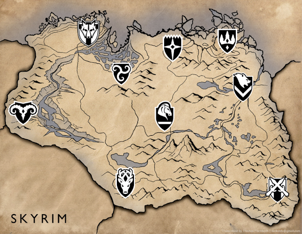

The Elder Scrolls V: Skyrim é um jogo eletrônico de RPG de ação desenvolvido pela Bethesda Game Studios e publicado pela Bethesda Softworks. É o quinto jogo principal da série The Elder Scrolls, seguindo The Elder Scrolls IV: Oblivion. Foi lançado em 11 de novembro de 2011 para Microsoft Windows, PlayStation 3 e Xbox 360. É o primeiro jogo ocidental da história a receber 40/40 (nota máxima) na conceituada Famitsu. O jogo conseguiu três prêmios no VGA 2011, incluindo Jogo do Ano.
Os acontecimentos do jogo passam-se duzentos anos depois da, já quase esquecida, crise de Oblivion, no ano 201 da quarta era (4E 201) na província de Skyrim, no norte de Tamriel, e 30 anos após a mais recente Grande Guerra, onde o Aldmeri Dominion e o Império lutaram arduamente, mas que quase extinguiu os humanos de Tamriel, e para evitar tal derrota, acordaram com a Aldmeri Dominion, rendendo duas forças e sujeitando-se as suas exigências.
Skyrim é a terra natal de um povo bravo chamados de Nords (uma raça de humanos) onde além da Grande Guerra, irrompeu uma guerra civil após o assassinato do Alto Rei de Skyrim, Torygg. E diante de todas estas guerras e problemas, a província se encontra dividida: de um lado, os StormCloaks, rebeldes comandados por Ulfric que buscam a independência de Skyrim perante o império; do outro, os Imperiais, militares comandados por Tullius e aliados ao império.

Clique para minimizar
Jogabilidade
Skyrim é um jogo de RPG que mantém a tradicional jogabilidade de mundo aberto encontrada na série The Elder Scrolls. O jogador é livre para andar pela terra de Skyrim a sua vontade. Em Skyrim há nove grandes "posses", com nove capitais que são as principais cidades do jogo. Também há várias pequenas aldeias, cavernas, templos, fazendas e montanhas. Cada vilarejo e cidade possui sua própria economia, que o jogador pode manipular ou sabotar se escolher fazer isso.
Ao visitar as cidades, o jogador pode completar atividades como cozinhar, agricultura, cortar madeira e criar itens de metal na forja mais próxima, como também aceitar trabalhos (chamados de "Quests") para ganhar dinheiro. Qualquer trabalho que um NPC pode realizar também pode ser feito pelo jogador. O nível do jogador aumenta quando suas habilidades aumentam. Dezoito habilidades estão presentes em Skyrim, e o sistema de classes de Oblivion foi removido. Perks (ou bônus) são capacidades específicas de cada habilidade, organizada em um sistema de grupo de ramificações chamado de "árvores de Perks". Cada aumento de nível permite que outro benefício seja escolhido. Existem 280 perks (ou bônus), e agora é possível passar do nível 81, mas depois disso a taxa de aumento das habilidades é reduzida.
O HUD na tela apenas aparece quando a vida, energia ou mágica do jogador estão se esgotando. Itens e esquemas de equipamentos podem ser salvos por um menu de rápido acesso, e o menu de inventário na tela de pause é apresentado em uma sobreposição em estilo bússola; enquanto que no inventário, o jogador pode girar e se aproximar dos itens adquiridos.
Sinopse
Enredo
O jogador entra na pele do último Dovahkiin,que tem o dever de livrar a província de Skyrim da tormenta causada pelos dragões e seu líder Alduin. O jogo se passa duzentos anos depois dos eventos de Oblivion. Na premissa, o Império começa a ceder territórios para as nações Élficas uma vez governadas, porque não há nenhum herdeiro para o trono do Imperador. Os Blades não tem ninguém para defender, e gradualmente morreram, foram assassinados ou se isolaram do resto do mundo. Depois do assassinato do Rei de Skyrim, uma guerra civil irrompe entre as raças nativas Nord — sendo a maioria aqueles que desejavam que Skyrim se separe do Império, e o resto sendo aqueles que desejam que Skyrim permaneça no Império.
Como os jogos Elder Scrolls anteriores, Skyrim começa com o personagem do jogador como um prisioneiro desconhecido, condenado por cruzar a fronteira e ser confundido com um Stormcloak. Tendo que enfrentar, nesse novo capítulo da série,[14] Alduin. Alduin foi, em tempos remotos, o líder dos dragões que dominavam o mundo e escravizavam todos os seres humanos, até que um dia foi derrotado por nórdicos, depois da derrota de Alduin, os outros dragões começaram a serem mortos, isso, muito tempo antes da história que o jogador vive em Skyrim. O personagem do jogador é o último Dragonborn (Nascido do Dragão), um caçador de dragões que tem o objetivo de afastar a ameaça que Alduin representa para Skyrim e Tamriel. Ajudando o jogador está Esbern (dublado por Max von Sydow) e Delphine talvez os últimos Blades vivos.